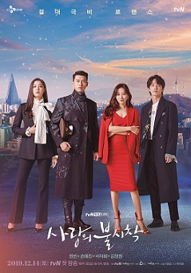

Reply 1988 mengisahkan tentang persahabatan antara lima remaja SMA yang hidup bertetangga di Ssangmun-dong, distrik Dobong, Seoul bagian utara. Deok Sun, Jeong Hwan, Sun Woo, Dong Ryong, dan Choi Taek tumbuh bersama sejak kecil. Menurut saya pribadi drama ini sangat sesuai dengan realita kehidupan sehari hari kita, tidak hanya menceritakan mengani persahabatan tapi juga mengenai hubungan keluarga, bertetangga, Sekolah dan bagaimana kita merai cita cita kiat. Persahabatan mereka begitu
Drama ini menghadirkan cerita yang menarik seputar dunia mata-mata, di mana seorang pria (diperankan oleh Lee Seung Gi) berusaha mengungkap kebenaran di balik sebuah kasus kecelakaan pesawat.
 Karena kecelakaan paralayang, seorang wanita pewaris dari Korea Selatan mendarat di Korea Utara. Ia pun masuk ke dalam kehidupan tentara yang membantunya bersembunyi.